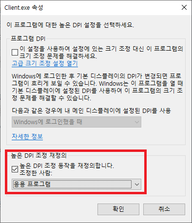
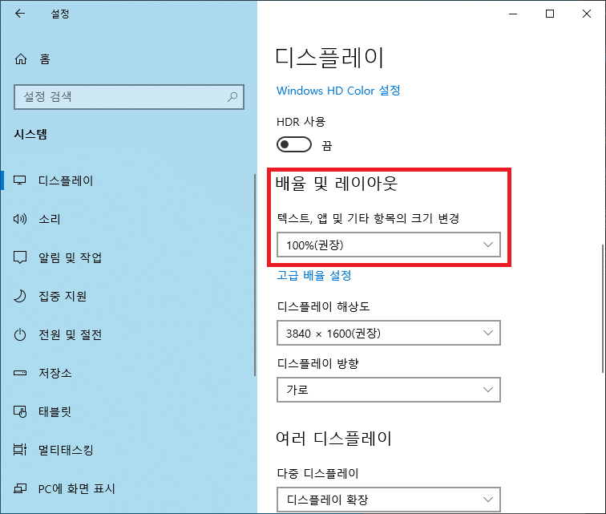

본 페이지의 정보와 프로그램을 사용함으로 인한 모든 책임은 사용자에게 있습니다.
다운로드
- 최신 버전(2021/09/06): madye 0.2.4
- 기존 유저는 personal 폴더만 옮겨주면 기존의 기록과 설정이 유지됩니다.
프로그램 정보
- 동작환경: Windows 7 이상 32bit/64bit
- 문의: madyedev@gmail.com
기본 사용 방법
- 프로그램 압축파일을 다운로드 받습니다.
- 압축해제후 madye 실행 파일(madye.exe) 실행합니다.
- 색 설정 창에서 찾고자 하는 색의 RGB 또는 HEX 값을 입력합니다.
- 일치수와 오차값을 설정합니다.
- 반드시 일치해야하는 번호가 있을 경우 해당 일치 번호를 선택합니다.
- 시작 버튼을 누르거나 시작 단축키(기본값: Ctrl+Shift+S)를 입력합니다.
- 색을 찾는 도중에 중단하고 싶을 때는 같은 단축키를 입력합니다.
부가 기능
즐겨찾기
- 자주 사용하는 색 설정을 저장해놓고 불러올 수 있습니다.
- 색 설정 후 이름칸에 색 이름을 입력(생략 가능)하고 즐겨찾기 추가 버튼을 누릅니다.
- 즐겨찾기 항목을 편집하려면 해당 항목을 더블 클릭합니다.
- 즐겨찾기 창에서 우클릭하면 즐겨착지 항목을 편집/삭제할 수 있는 메뉴가 표시됩니다.
과거기록
- 지금까지 성공적으로 색을 찾은 기록을 나타냅니다.
- 최대 3만개까지 최근 기록이 보관됩니다.
- 항목을 더블 클릭하면 바로 즐겨찾기로 추가할 수 있는 창이 표시됩니다.
- 찾은 색 위에 마우스를 올리면 일시가 툴팁으로 표시됩니다.
결과 창
- 결과창에는 시도한 횟수와 발견 여부, 찾은 색들이 표시됩니다.
- 색 목록에서 색 설정과 일치하는 색은 RGB 오차값과 함께 빨간 글씨로 표시됩니다.
- 색 목록에서 항목을 더블 클릭하면 바로 즐겨찾기로 추가할 수 있는 창이 표시됩니다.
FAQ
"염색창을 탐지하는데 실패하였습니다." 오류가 뜹니다.
Windows 10 이상의 운영체제에서 고해상도 모니터 이용시 높은 DPI 설정을 이용하면 프로그램이 정상 작동하지 않습니다. 아래 두 가지 방법 중 하나를 적용 후, 재실행 후 다시 시도해보세요.
디스플레이 설정을 건드리지 않는 방법
게임 클라이언트 파일(Client.exe) 우클릭 → 속성 → 호환성 → 높은 DPI 설정 변경 → 높은 DPI 조정 재정의 항목을 아래와 같이 설정 
디스플레이 설정을 바꾸는 방법
바탕화면 우클릭 → 디스플레이 설정 → 배율 및 레이아웃 항목을 아래와 같이 설정 